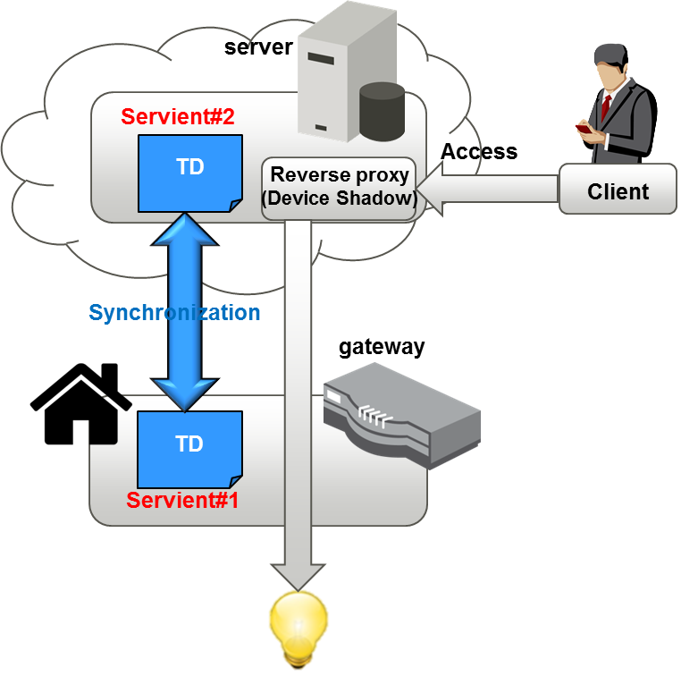
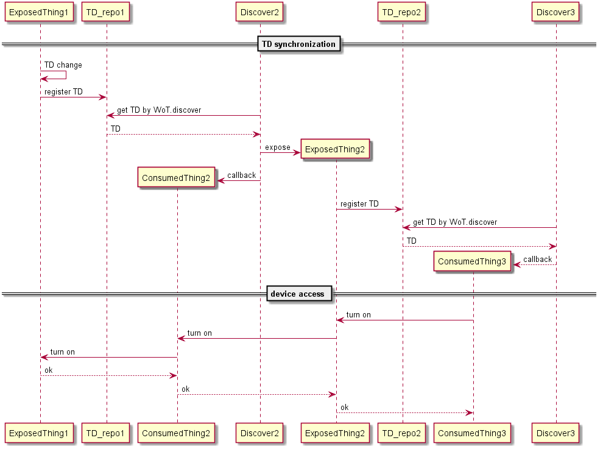
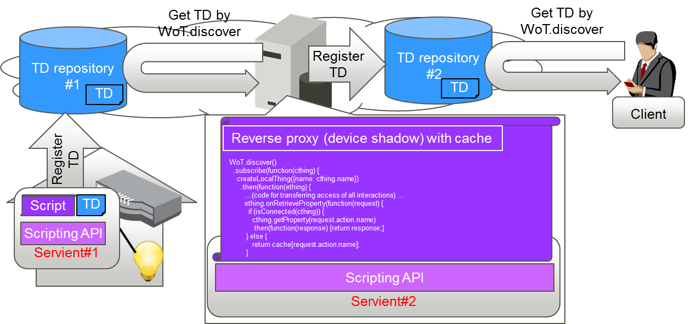
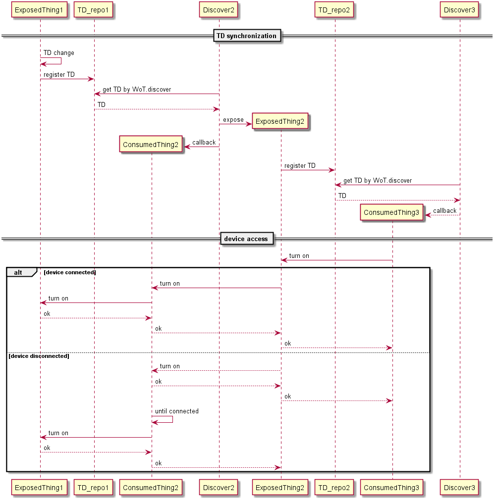

WoT reverse proxy
This document explains about reverse proxy for shadow things and how it realized using ScriptingAPI.
1. Reverse proxy
WoT reverse proxy is a kind of servient that provides roles of reverse proxy to avoid direct access to another servient underneath to keep quality of service regardless of the network connection of device.
The reverse proxy has two types:
- reverse proxy without cache: When a servient (servient#1) for reverse proxy is called, it synchronously accesses to another servient (servient#2) and device underneath.
- reverse proxy with cache: Caching the status of servient#1 and replicating on servient#2 even if servient#1 or device underneath loose the network connection.
2. Reverse proxy using TD and ScrptingAPI
One way to realize the reverse proxy is synchronization of Thing Description(TD) using Scripting API.

2.1. Reverse proxy without cache
Description
- The state synchronization of servients can be achieved by observing servient#1.
Setup
- servient#1 registers a TD of connected devices to TD repository #1.
- servient#2 has a script that transferring all of the accesses for the synchronization. servient#2 gets the TD by WoT.discover, parses the TD, then servient#2 exposes the same functions as the servient#1 and registers new TD to TD repository #2. The callback functions access the servient#1.
Script for reverse proxy
The following is outline of a script to relize reverse proxy without cache.
WoT.discover()
.subscribe(function(cthing) {
createLocalThing({name: cthing.name})
.then(function(ething) {
…(code for transferring access of all interactions) …
ething.onInvokeAction(function(request) {
cthing.invokeAction(request.action.name, request.inputData)
.then(function(response) {return response;}
…
cthing: an instance of ConsumedThing in a servient
ething: an instance of ExposedThing in the servient
Usage
- Client gets the TD from TD repository #2 by WoT.discover, and accesses the servient#1 via servient#2.

Flow

TD synchronization
When thing has changed e.g. network IP has changed, it is necessary to propagete to the corresponding servients.
- servient#1 reflects the change to a TD for a thing and registers the TD to TD_repo1.
- servient#2 issues WoT.discover(Discover2) command to get the TD.
Note that the timeing of the issue depends on implementations. Discover2 might periodically issue Wot.discover(Discover2) or might receive a notification from servient#1. This is out of the scope of this document.
- servient#2 receives the TD and exposes WoT API based on the TD using ScriptingAPI(ExposedThing). servient#2 setups callback for accesing the device as ConsumedThing(2) using ScriptingAPI.
- servient#2 registers the TD to TD_repo2.
- Client issues WoT.discver(Discover3) command to get the TD and receive the TD.
- Client setups callback for accessing the device as ConsumeThing(3) using ScriptingAPI.
Device access
- ConsumedThing(3) in Client issues comman to turn on the device.
- ExposedThing(2) in servient#2 receives the command and the callback pass-throughs the command to servient#1 through ConsumedThing(2).
- ExposedThing(1) in servient#1 receives the command and turn on the device. Then return an acknowledge.
2.2. Reverse proxy with cache
Description
- The state synchronization of servients can be achieved by observing servient#1. In addition, servient#2 holds the state and replicate the status even if servient#1 or device underneath looses the network connection for some reason.
Setup
- servient#1 registers a TD of connected devices to TD repoistory #1.
- servient#2 has a script for the reverse proxy with cache that replicates on servient#2. servient#2 gets TD by WoT.discover, parses the TD, then servient#2 exposes the same functions with the servient#1 and registers new TD to TD repository #2. The callback functions access the servient#1.
Script for reverse proxy
The following is outline of a script to relize reverse proxy with cache.
Difference from the previous one is if an instance of consumedThing is not connected to network, replicate using cache.
WoT.discover()
.subscribe(function(cthing) {
createLocalThing({name: cthing.name})
.then(function(ething) {
…(code for transferring access of all interactions) …
ething.onRetrieveProperty(function(request) {
if (isConnected(cthing)) {
cthing.getProperty(request.action.name)
.then(function(response) {return response;}
} else {
return cache[request.action.name];
}
cthing: an instance of ConsumedThing in a servient
ething: an instance of ExposedThing in the servient
Usage
- Client gets the TD from TD repo #2 by WoT.discover, accesses the servient#1 via servient#2 when servient#1 is accessible, and replicate the responses by accessing a cache in the servient#2 when servient#1 is not accessible.

Flow

TD synchronization
TD synchronization behaves same as the previous one.
Device access
The cache holds the behavior of event, action, and propert. It might holds linked data from a sensor for event, holds command issueing or event watting for action, and holds status of thing or command issueing for property.
In the above flow:
- ConsumedThing(3) in Client issues comman to turn on the device.
If device connected:
- ExposedThing(2) in servient#2 receives the command and the callback forwards the command to servient#1 through ConsumedThing(2) if the device is connected.
Note that how to detect the device connection is up to the implementation and out of the scope of this document.
- ExposedThing(1) in servient#1 receives the command and turn on the device. Then return an acknowledge.
If device disconnected:
- ExposedThing(2) in servient#2 receives the command and return an acknowledgement to ConsumedThing(3) in Client.
- The cache mechanizm of servient#2 holds the comman until the device connected to the network.
- When it is connected, issues the commands to servient#1.